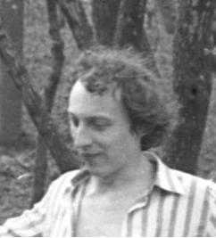

Необоснованность (сборник стихов)
Иммунитет (пьеса в восьми картинах с прологом и эпилогом)
Нелинейный экстраполятор (фантастический рассказ)
Трубус (фантастический рассказ, опубликован в "Технике - молодежи", 1989, N2)

30 октября 1999 г. не стало Евгения Фёдоровича Кенемана, талантливого и разностороннего человека, моего друга с детских лет. Остались опубликованные в советской печати фантастические и юмористические рассказы, а также огромное неопубликованное наследие: сотни коротких стихотворений, три большие поэмы, повесть, пьеса. На магнитофонах осталась его музыка, а на стенах квартиры - его удивительные картины.
Остались также невыясненные обстоятельства убийства этого человека. Шёл по улице, остановлен патрульной машиной милиции. Дальше что-то произошло. Через несколько часов оказался дома и через сутки после операции скончался в больнице от "тупой травмы живота".
Женя Кенеман хотел, чтоб его произведения нашли своего читателя. Он больше не будет ходить по издательствам, предлагая свои стихи и рассказы. Отныне забота о судьбе его творческого наследия становится обязанностью друзей поэта.
Ю.Насимович
Последнее изменение страницы 21 Apr 2020